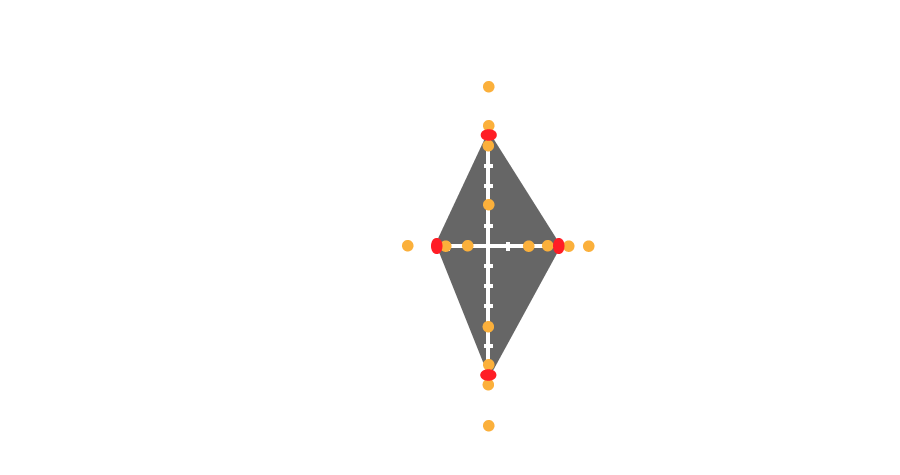

Hi, I'm Michał. I am ..
..software developer at TouK
..blogger at lewandowski.io
..tech event organizer
Disclaimer
Beginners: This is for you.
Experts: Contribute, please.
All: Throw a question at any time.
Let's talk about you
How many of you
write code on a daily basis?
have been in a retrospective?
have led a retrospective?
think it is profitable for the team?
think it is a waste of time?
do it regularly?
Retrospective
Definition
process review
between iterations
process modification if required
Retrospekcja
Odtwarzanie w pamięci przeżyć lub zdarzeń z przeszłości
Retrospektywa
Chronologiczny przegląd dzieł danego artysty lub grupy artystycznej
Heart of agile
"Inspect and adapt" cycles
Retrospectives
Retrospectives
Relate to:
Engineering practices
Methods
Teamwork
What to do when somebody breaks discussion?
Motivation
1% Improvements
Every day 1% better
\[\begin{aligned}
1.01^{365} & = 37.8\\
\end{aligned} \]
Every day 1% worse
\[\begin{aligned}
0.99^{365} & = 0.3\\
\end{aligned} \]
Workdays 1% better
\[\begin{aligned}
1.01^{225} & = 9.4\\
\end{aligned} \]
Long term profits
Major transformation can start from single retrospective
The Party
Something good - do more
Something bad - do less
Basics
Retrospective coherence
- easy to think about past
- hard to predict future
- you can not clone good actions
- multiple happy endings
Basics
Process of change
- rejection of old
- chaos
- stabilization
- integral part
Basics
Leader's tasks
- preparing activities
- making notes
- keeping discussion up
- timeboxing
- continuity
How to handle dead silence?
Basics
Activities
- Attention
- Relevance
- Confidence
- Satisfaction
Basics
Kinds of retrospectives

Warm-up
The goal
- open for discusion
- not blaming
Bad: How to convince management for faster Jenkins machines?
Better: What is wrong with our testing system?
Best: Find a way to improve CI.
Scrum retrospective
- After sprint review
- 3 hours for one month sprint
- Improvements plan for the next sprint
Why retrospective should be after review?
Retrospectives
Formula
- warm-up
- data collection
- generating insights
- setting action points
- closing
Warm-up
Boring retrospective
Good, Bad, Change
- Worked well, Do it differently
- Hopes and concerns
- Smiley, Frowny
- Prouds, Sorries
- WWW activity: Worked well, kinda Worked, didn’t Work
Warm-up
Positive stickers
Warm-up
One word exercise
Everyone says one word about:
- feelings
- expectations
- attitude
- goals
Warm-up (big retrospectives)
Working agreements
Gathering data
Stickers
- Regular team
- Regular retrospective
Gathering data
Timeline
- Regular team
- Project retrospective
Gathering data
Talking
- Without preparation
- Trying to solve communication problems
Gathering data
Team Radar
- Continuous feedback
- Big team
Gathering data
Team radar

Gathering data
Sticky notes
How to group sticky notes?
- one person does it
- round-robin
- pairs, fours, eights, ...
What to do when somebody cries?
Insights
Ideas:
- understand facts
- dig up the most important information
- discover results of potential changes
Insights methods
Transforming communication
- I-messages (Observation, Feeling, Needs, Request)
- Reflective listening
Insights methods
Force field analysis
To validate possibility of achieving the goal
- Firstly, imagine the goal
- Secondly, think about forces against and for the change
What to do when somebody slams the door on his way out?
Action Points
SMART
- Specific
- Measurable
- Achievable
- Results-focused
- Time-bound
Dotmocracy
Changes should be selected, not ordered
How many votes per person?
0.25 * total actions points
How many actions points do?
The 25-5 rule by Warren Buffett
What to do when nobody want to do action points?
Closing / Opening
Appreciation
This activity
- changes the way members relate to each other
- helps avoiding fights
Closing
Celebrate it!
Good actions and behavior will be replicated in next iterations or in other areas
Summary
- Motivation
- Basic rules
- Retrospective structure
- Retrospective activities
What's next?
And remember the story about the party